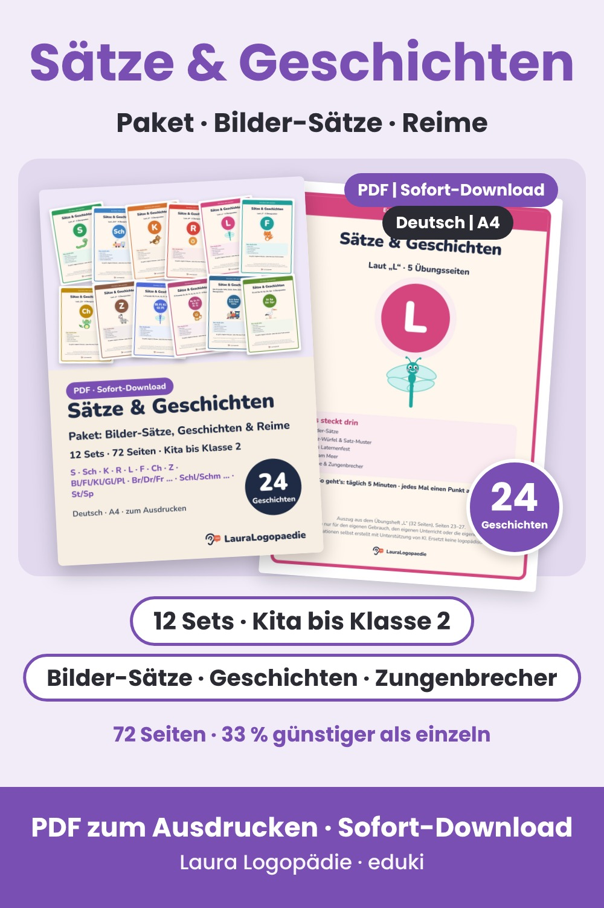

12 Sets mit Bilder-Sätzen, Satz-Würfel, je 2 Geschichten sowie Reimen und Zungenbrechern – für S, Sch, K, R, L, F, Ch, Z und die Lautverbindungen. 72 Seiten als PDF zum Ausdrucken, rund 33 % günstiger als einzeln.
Zum Paket auf edukiLauraLogopaedie – von einer Mama gemacht, keine Logopädin. Die Materialien ersetzen keine Therapie. Texte und Illustrationen entstehen mit Unterstützung von KI.